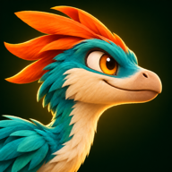

<title>Raptor Race UX Concepts</title>
<meta name="claude:viewport-fit-sides" content="cover">
<link rel="stylesheet" href="https://fonts.googleapis.com/css2?family=Bebas+Neue&family=Caveat:wght@600;700&family=Fredoka:wght@600;700&family=Inter:wght@400;500;600&family=Space+Grotesk:wght@500;600;700&display=swap">
<style>
/* One column, read top to bottom on a phone: three whole-game directions as pairs of mock screens, then the smaller choices, then my pick. */
:root {
  --bg: #eef2ee; --panel: #ffffff; --ink: #18211e; --soft: #55635d; --line: #d3dcd6;
  --amber: #c9791a; --amber-fill: #f2a93b; --egg: #2c9c8f; --pick: #1f6f52; --pick-bg: #dff0e6;
  --display: 'Space Grotesk', 'Avenir Next', system-ui, sans-serif;
  --body: 'Inter', system-ui, -apple-system, 'Segoe UI', sans-serif;
}
@media (prefers-color-scheme: dark) {
  :root:not([data-theme="light"]) { --bg: #121a17; --panel: #1b2622; --ink: #edf2ec; --soft: #a3b3ab; --line: #2e3d37; --amber: #f2a93b; --amber-fill: #f2a93b; --egg: #58cdbf; --pick: #8fdcb6; --pick-bg: #1d3a2e; color-scheme: dark; }
}
:root[data-theme="dark"] { --bg: #121a17; --panel: #1b2622; --ink: #edf2ec; --soft: #a3b3ab; --line: #2e3d37; --amber: #f2a93b; --amber-fill: #f2a93b; --egg: #58cdbf; --pick: #8fdcb6; --pick-bg: #1d3a2e; color-scheme: dark; }

body { background: var(--bg); color: var(--ink); font: 15px/1.55 var(--body); }
.page { max-width: 760px; margin: 0 auto; padding-block: 28px 56px; padding-left: max(16px, env(safe-area-inset-left, 0px)); padding-right: max(16px, env(safe-area-inset-right, 0px)); display: flex; flex-direction: column; gap: 34px; }
h1, h2, h3 { font-family: var(--display); margin: 0; text-wrap: balance; line-height: 1.15; }
h1 { font-size: 30px; }
h2 { font-size: 22px; }
h3 { font-size: 17px; }
p { margin: 0; }
.eyebrow { font-size: 12px; font-weight: 600; letter-spacing: 0.12em; text-transform: uppercase; color: var(--amber); }
.lede { color: var(--soft); max-width: 62ch; }
.top, .block { display: flex; flex-direction: column; gap: 12px; }
.block > p { max-width: 65ch; }
.opts { display: flex; flex-direction: column; gap: 16px; }
.opt { background: var(--panel); border: 1px solid var(--line); border-radius: 14px; padding: 16px; display: flex; flex-direction: column; gap: 12px; }
.opt.pick { border-color: var(--pick); }
.opt header { display: flex; align-items: baseline; gap: 10px; flex-wrap: wrap; }
.letter { font: 700 13px var(--display); color: var(--soft); }
.tag { font-size: 11.5px; font-weight: 600; letter-spacing: 0.04em; padding: 2px 9px; border-radius: 999px; background: var(--pick-bg); color: var(--pick); }
.opt p { color: var(--soft); }
.opt p b { color: var(--ink); font-weight: 600; }
.pair { display: grid; grid-template-columns: 1fr 1fr; gap: 12px; }
.cap { font-size: 12px; color: var(--soft); text-align: center; margin-top: 6px; }
.trio { display: grid; grid-template-columns: repeat(3, 1fr); gap: 10px; }
.mini { display: flex; flex-direction: column; gap: 8px; min-width: 0; }
.mini h3 { font-size: 14.5px; }
.mini p { font-size: 13px; color: var(--soft); }
@media (max-width: 520px) { .trio { grid-template-columns: 1fr; } .trio .mini { flex-direction: row; align-items: center; gap: 14px; } .trio .tile { flex: 0 0 104px; } }
.rows { display: flex; flex-direction: column; gap: 10px; }
.row { background: var(--panel); border: 1px solid var(--line); border-radius: 12px; padding: 12px 14px; display: flex; gap: 12px; align-items: center; }
.row.pick { border-color: var(--pick); }
.row .txt { flex: 1; min-width: 0; display: flex; flex-direction: column; gap: 3px; }
.row .txt span { font-size: 13.5px; color: var(--soft); }
.row h3 { display: flex; gap: 8px; align-items: baseline; flex-wrap: wrap; }
.play { flex: none; width: 44px; height: 44px; border-radius: 22px; border: 1.5px solid var(--line); background: transparent; color: var(--ink); font-size: 15px; cursor: pointer; }
.play:focus-visible, .wm:focus-visible { outline: 2px solid var(--amber); outline-offset: 2px; }
ol.asks { margin: 0; padding-left: 22px; display: flex; flex-direction: column; gap: 6px; }
.note { font-size: 13px; color: var(--soft); }

/* ---- mock screens: fixed colors of their own, sized in container units so they scale with the column */
.phone { container-type: inline-size; }
.screen { position: relative; aspect-ratio: 400 / 869; border-radius: 9cqw; overflow: hidden; background: #16211f center / cover no-repeat; color: #f6ecd6; font-family: 'Avenir Next', 'Avenir', system-ui, sans-serif; box-shadow: 0 0 0 1px rgba(0, 0, 0, 0.25), 0 10px 26px rgba(0, 0, 0, 0.22); }
.screen > * { position: absolute; }
.shade-top { inset: 0 0 auto; height: 38%; background: linear-gradient(#0c1412d9, #0c141200); }
.shade-bot { inset: auto 0 0; height: 46%; background: linear-gradient(#0c141200, #0c1412e6); }
.glassbtn { left: 9cqw; right: 9cqw; height: 14cqw; border-radius: 4.5cqw; background: #f2a93b; color: #1c1a17; font-weight: 700; font-size: 6cqw; display: flex; align-items: center; justify-content: center; }
.round { width: 12.5cqw; height: 12.5cqw; border-radius: 50%; background: #16211fdd; border: 0.5cqw solid #f2a93bb3; display: flex; align-items: center; justify-content: center; font-size: 6cqw; }
.sheet { left: 6cqw; right: 6cqw; border-radius: 6cqw; background: #16211ff0; border: 0.6cqw solid #f2a93bb3; padding: 5.5cqw; display: flex; flex-direction: column; gap: 3cqw; text-align: center; }
.sheet b { font-size: 6.6cqw; }
.sheet span { font-size: 4.4cqw; }
.sheet .btn { height: 12cqw; border-radius: 4cqw; background: #f2a93b; color: #1c1a17; font-weight: 700; font-size: 5cqw; display: flex; align-items: center; justify-content: center; }
.sheet .btn.ghost { background: transparent; color: #f6ecd6; border: 0.4cqw solid #f6ecd666; }
.medals { display: flex; justify-content: center; gap: 3cqw; }
.medals i { width: 7cqw; height: 9cqw; background: #f2a93b; clip-path: polygon(50% 0, 100% 62%, 85% 100%, 15% 100%, 0 62%); }
.medals i.off { background: #f6ecd633; }
/* A: wordmark over the live nest */
.wordA { top: 9%; left: 0; right: 0; text-align: center; font-family: 'Fredoka', sans-serif; font-weight: 700; font-size: 13.5cqw; line-height: 0.92; letter-spacing: 0.01em; text-shadow: 0 0.6cqw 2.4cqw #000a; }
.wordA small { display: block; font-family: 'Avenir Next', system-ui, sans-serif; font-weight: 600; font-size: 4.2cqw; letter-spacing: 0.22em; text-transform: uppercase; margin-top: 2.5cqw; color: #f2c56b; }
/* B: paper */
.paper { background: #efe6d0; color: #2b2a26; }
.paper .rule { left: 0; right: 0; height: 100%; background: repeating-linear-gradient(#0000 0 5.9cqw, #6c8fae33 5.9cqw 6.1cqw); }
.hand { font-family: 'Caveat', 'Bradley Hand', cursive; font-weight: 700; }
.wordB { top: 6%; left: 8cqw; right: 8cqw; font-size: 15cqw; line-height: 0.9; transform: rotate(-2deg); }
.wordB small { display: block; font-size: 6.5cqw; font-weight: 600; color: #8a5a1c; }
.photo { background: #fff center / cover no-repeat; border: 2cqw solid #fff; border-bottom-width: 6cqw; box-shadow: 0 1cqw 3cqw #0005; }
.stamp { border: 0.8cqw solid #a8431f; color: #a8431f; border-radius: 2cqw; font-family: 'Bebas Neue', Impact, sans-serif; font-size: 8cqw; letter-spacing: 0.08em; padding: 1cqw 5cqw; transform: rotate(-4deg); display: inline-flex; }
.paper .line { left: 8cqw; right: 8cqw; font-size: 6.2cqw; line-height: 1.15; }
.finds { display: flex; gap: 3cqw; }
.finds i { width: 9cqw; height: 9cqw; border-radius: 50%; border: 0.6cqw dashed #2b2a2688; }
.finds i.on { border: 0.8cqw solid #2f6f9a; background: #8fd8ff88; }
/* C: the song */
.dim { inset: 0; background: #0c1412cc; }
.wordC { top: 8%; left: 8cqw; right: 8cqw; font-family: 'Bebas Neue', Impact, sans-serif; font-size: 19cqw; line-height: 0.86; letter-spacing: 0.02em; }
.wordC small { display: block; font-family: 'Avenir Next', system-ui, sans-serif; font-size: 4.2cqw; font-weight: 600; letter-spacing: 0.16em; color: #58cdbf; margin-top: 2cqw; }
.strip { left: 6cqw; right: 6cqw; height: 26cqw; border-radius: 4cqw; background: #0c1412b3; border: 0.4cqw solid #f6ecd62e; display: grid; grid-template-rows: repeat(3, 1fr); padding: 3cqw 3.5cqw; }
.strip .lane { display: flex; align-items: center; justify-content: space-between; border-bottom: 0.25cqw dashed #f6ecd624; }
.strip .lane:last-child { border-bottom: 0; }
.strip i { width: 2.2cqw; height: 2.2cqw; border-radius: 50%; background: transparent; }
.strip i.n { background: #f2a93b; box-shadow: 0 0 1.6cqw #f2a93b; }
.strip i.m { background: #f6ecd62e; }
.big { left: 0; right: 0; text-align: center; font-family: 'Bebas Neue', Impact, sans-serif; font-size: 30cqw; line-height: 0.9; color: #f2a93b; }
.big small { display: block; font-family: 'Avenir Next', system-ui, sans-serif; font-size: 4.6cqw; font-weight: 600; color: #f6ecd6; letter-spacing: 0.04em; }
.c-label { left: 6cqw; right: 6cqw; font-size: 4.2cqw; font-weight: 600; letter-spacing: 0.1em; text-transform: uppercase; color: #f6ecd6b3; }
/* loading tiles */
.tile { position: relative; aspect-ratio: 1; border-radius: 14px; overflow: hidden; background: #16211f; container-type: inline-size; }
.tile.paper { background: #efe6d0; }
.drop { position: absolute; left: 50%; top: 50%; width: 34cqw; height: 44cqw; transform: translate(-50%, -52%); clip-path: polygon(50% 0, 100% 62%, 85% 100%, 15% 100%, 0 62%); background: linear-gradient(#f6ecd626 0 38%, #f2a93b 38% 100%); }
.tile .pct { position: absolute; left: 0; right: 0; bottom: 9cqw; text-align: center; color: #f6ecd6; font: 600 8cqw 'Avenir Next', system-ui, sans-serif; }
.tile svg { position: absolute; inset: 0; width: 100%; height: 100%; }
.sketch { fill: none; stroke: #2b2a26; stroke-width: 2.2; stroke-linecap: round; stroke-linejoin: round; stroke-dasharray: 260; stroke-dashoffset: 96; }
.track { fill: #f2a93b; }
.track.off { fill: #f6ecd62e; }
@media (prefers-reduced-motion: no-preference) {
  .sketch { animation: draw 3.2s ease-in-out infinite alternate; }
  @keyframes draw { from { stroke-dashoffset: 260; } to { stroke-dashoffset: 0; } }
}
/* wordmarks */
.wms { display: flex; flex-direction: column; gap: 10px; }
.wm { display: flex; align-items: center; gap: 14px; padding: 14px 16px; border-radius: 14px; background: #16211f; color: #f6ecd6; border: 1px solid var(--line); min-width: 0; }
.wm img { width: 54px; height: 54px; border-radius: 13px; flex: none; }
.wm .w { min-width: 0; line-height: 0.95; }
.wm .w1 { font-family: 'Fredoka', sans-serif; font-weight: 700; font-size: clamp(26px, 8vw, 40px); }
.wm .w1 em { font-style: normal; color: #f2a93b; }
.wm .w2 { font-family: 'Caveat', cursive; font-weight: 700; font-size: clamp(32px, 10vw, 50px); }
.wm .w3 { font-family: 'Bebas Neue', Impact, sans-serif; font-size: clamp(34px, 11vw, 54px); letter-spacing: 0.04em; }
.wm .w3 em { font-style: normal; color: #58cdbf; }
.wm small { display: block; font: 500 12px var(--body); color: #f6ecd6b3; margin-top: 6px; }
</style>

<main class="page">
  <div class="top">
    <span class="eyebrow">Raptor Race &middot; concepts, nothing built</span>
    <h1>Everything around the run</h1>
    <p class="lede">Loading, the home screen and its music, menu sounds, and what happens after a level. Three directions for the whole thing first, then the smaller choices. The backdrops are real frames from build 34; everything drawn over them is a sketch.</p>
  </div>

  <section class="block">
    <h2>Three directions</h2>
    <p>Each one is shown as its home screen and its screen after a level.</p>
    <div class="opts">

      <article class="opt pick">
        <header><span class="letter">A</span><h3>The living nest</h3><span class="tag">my pick as the frame</span></header>
        <div class="pair">
          <div><div class="phone"><div class="screen" style="background-image:url(shots/nest.jpg)">
            <div class="shade-top"></div><div class="shade-bot"></div>
            <div class="wordA">Raptor<br>Race<small>Jehol Forest</small></div>
            <div class="glassbtn" style="bottom:13%">Run!</div>
            <div class="round" style="left:9cqw; bottom:3.5%">&#9776;</div>
            <div class="round" style="right:9cqw; bottom:3.5%">&#9881;</div>
          </div></div><p class="cap">Home</p></div>
          <div><div class="phone"><div class="screen" style="background-image:url(shots/hatch.jpg)">
            <div class="shade-bot"></div>
            <div class="sheet" style="bottom:4%">
              <b>You caught the egg!</b>
              <div class="medals"><i></i><i></i><i class="off"></i></div>
              <span>Amber 228 of 309 &middot; Finds 2 of 3</span>
              <div class="btn">Run again</div>
              <div class="btn ghost">Field Journal</div>
            </div>
          </div></div><p class="cap">After a level</p></div>
        </div>
        <p><b>There is no menu world.</b> The game opens on the nest, alive, with a title and a Run! button over it. Results sit over the hatching. Buttons use the dark glass the game already has.</p>
        <p><b>For:</b> nothing between Aidan and the run, and it uses what is built. <b>Against:</b> little room to show a collection, and more levels need a way in (swipe to the next nest).</p>
      </article>

      <article class="opt">
        <header><span class="letter">B</span><h3>The Field Journal</h3><span class="tag">my pick for the journal pages</span></header>
        <div class="pair">
          <div><div class="phone"><div class="screen paper">
            <div class="rule"></div>
            <div class="wordB hand">Raptor Race<small>a field journal</small></div>
            <div class="photo" style="left:10cqw; top:27%; width:52cqw; height:60cqw; transform:rotate(-3deg); background-image:url(shots/nest.jpg)"></div>
            <div class="photo" style="right:7cqw; top:44%; width:40cqw; height:48cqw; transform:rotate(5deg); background-image:url(shots/chase.jpg)"></div>
            <div class="line hand" style="top:68%">Level 1 &middot; Jehol Forest<br>125 million years ago</div>
            <div style="left:8cqw; bottom:6%"><span class="stamp">Start</span></div>
          </div></div><p class="cap">Home</p></div>
          <div><div class="phone"><div class="screen paper">
            <div class="rule"></div>
            <div class="photo" style="left:9cqw; top:5%; width:60cqw; height:66cqw; transform:rotate(-2deg); background-image:url(shots/hatch.jpg)"></div>
            <div class="line hand" style="top:43%">Day 1. It hatched!</div>
            <div class="line hand" style="top:51%; font-size:5.2cqw; font-weight:600">Its family sat on their nests like birds, arms over the eggs.</div>
            <div class="line hand" style="top:68%">Amber: 228<br>Finds:</div>
            <div class="finds" style="left:30cqw; top:75.5%"><i class="on"></i><i class="on"></i><i></i></div>
            <div style="right:8cqw; bottom:5%"><span class="stamp">Again</span></div>
          </div></div><p class="cap">After a level</p></div>
        </div>
        <p><b>The whole shell is a naturalist's notebook.</b> Levels are pages, photos are taped in, and finishing a level fills in that day's page with a real fact.</p>
        <p><b>For:</b> it carries the science and gives Aidan something to read and collect. <b>Against:</b> paper and the 3D world are two looks, and it needs the most new art.</p>
      </article>

      <article class="opt">
        <header><span class="letter">C</span><h3>The song</h3><span class="tag">my pick for the results</span></header>
        <div class="pair">
          <div><div class="phone"><div class="screen" style="background-image:url(shots/chase.jpg)">
            <div class="dim"></div>
            <div class="wordC">Raptor<br>Race<small>JEHOL FOREST &middot; 120 BPM</small></div>
            <div class="c-label" style="top:44%">The level is a song</div>
            <div class="strip" style="top:48%" data-strip="home"></div>
            <div class="c-label" style="top:66%; text-transform:none; letter-spacing:0">Your best: 82% of the tune</div>
            <div class="glassbtn" style="bottom:8%">Play</div>
          </div></div><p class="cap">Home</p></div>
          <div><div class="phone"><div class="screen" style="background-image:url(shots/hatch.jpg)">
            <div class="dim"></div>
            <div class="big" style="top:9%">82%<small>of the tune, played by you</small></div>
            <div class="strip" style="top:36%" data-strip="run"></div>
            <div class="c-label" style="top:54%; text-transform:none; letter-spacing:0">Gold notes you caught. Grey ones you missed.</div>
            <div class="sheet" style="bottom:4%; background:transparent; border:0; padding:0">
              <div class="btn ghost">&#9654; Hear your run</div>
              <div class="btn">Run again</div>
            </div>
          </div></div><p class="cap">After a level</p></div>
        </div>
        <p><b>Built on the idea that amber plays the tune.</b> The level is drawn as its song. After a run you see which notes you caught and can hear your own version played back.</p>
        <p><b>For:</b> it makes the game's own idea the reward, and a missed note is a reason to run again. <b>Against:</b> it only works once the level is laid out to the song, and a strip of dots is abstract for a six-year-old.</p>
      </article>
    </div>
  </section>

  <section class="block">
    <h2>Loading</h2>
    <p>A few seconds on first open, while the forest arrives.</p>
    <div class="trio">
      <div class="mini"><div class="tile"><div class="drop"></div><div class="pct">62%</div></div><div><h3>1. Amber fills <span class="tag">my pick</span></h3><p>One drop of amber fills with gold. Simple, and it is the game's own token.</p></div></div>
      <div class="mini"><div class="tile paper"><svg viewBox="0 0 100 100" aria-hidden="true"><path class="sketch" d="M14,70 C24,52 38,48 50,50 C58,38 64,26 76,24 C82,23 86,27 84,31 L76,33 C72,42 68,50 62,56 C66,62 66,70 60,76 L58,88 M50,62 L46,88 M14,70 C22,66 30,64 38,62"/></svg></div><div><h3>2. A sketch draws itself</h3><p>The runner appears in ink, line by line. Suits the journal direction.</p></div></div>
      <div class="mini"><div class="tile"><svg viewBox="0 0 100 100" aria-hidden="true">
        <g class="track" transform="translate(22,74) rotate(-18)"><ellipse rx="2.6" ry="7" transform="rotate(-28) translate(0,-7)"/><ellipse rx="2.6" ry="8" transform="translate(0,-8)"/><ellipse rx="2.6" ry="7" transform="rotate(28) translate(0,-7)"/></g>
        <g class="track" transform="translate(44,56) rotate(-10)"><ellipse rx="2.6" ry="7" transform="rotate(-28) translate(0,-7)"/><ellipse rx="2.6" ry="8" transform="translate(0,-8)"/><ellipse rx="2.6" ry="7" transform="rotate(28) translate(0,-7)"/></g>
        <g class="track off" transform="translate(62,40) rotate(-4)"><ellipse rx="2.6" ry="7" transform="rotate(-28) translate(0,-7)"/><ellipse rx="2.6" ry="8" transform="translate(0,-8)"/><ellipse rx="2.6" ry="7" transform="rotate(28) translate(0,-7)"/></g>
        <g class="track off" transform="translate(80,24)"><ellipse rx="2.6" ry="7" transform="rotate(-28) translate(0,-7)"/><ellipse rx="2.6" ry="8" transform="translate(0,-8)"/><ellipse rx="2.6" ry="7" transform="rotate(28) translate(0,-7)"/></g>
      </svg></div><div><h3>3. Footprints</h3><p>Three-toed tracks walk up the screen, one per step of loading.</p></div></div>
    </div>
  </section>

  <section class="block">
    <h2>Menu sounds</h2>
    <p>Tap to hear a rough stand-in for each. I can't hear these myself, so judge the idea more than the exact sound.</p>
    <div class="rows">
      <div class="row pick"><button class="play" id="snd-notes" aria-label="Play amber notes">&#9654;</button><div class="txt"><h3>1. Amber notes <span class="tag">my pick</span></h3><span>Every tap is a note in the level's key, in the amber's own voice. Yes is two notes up, back is one down.</span></div></div>
      <div class="row"><button class="play" id="snd-foley" aria-label="Play forest sounds">&#9654;</button><div class="txt"><h3>2. The forest</h3><span>A twig snap, a pebble, a leaf turned over. Natural, with no pitch.</span></div></div>
      <div class="row"><button class="play" id="snd-click" aria-label="Play quiet clicks">&#9654;</button><div class="txt"><h3>3. Quiet clicks</h3><span>A soft wooden tick and nothing more. Stays out of the way.</span></div></div>
    </div>
  </section>

  <section class="block">
    <h2>Music on the home screen</h2>
    <div class="rows">
      <div class="row"><div class="txt"><h3>1. The theme, stripped back</h3><span>The level's strings and its tune, slow, with no drums. It is the chase music waiting to start.</span></div></div>
      <div class="row"><div class="txt"><h3>2. The forest itself</h3><span>Wind in the trees, insects, a far-off call. No music until you press Run.</span></div></div>
      <div class="row pick"><div class="txt"><h3>3. Forest first, then the theme <span class="tag">my pick</span></h3><span>It opens on the forest alone. After a few seconds the strings come in under it. Pressing Run brings in the kick.</span></div></div>
    </div>
  </section>

  <section class="block">
    <h2>The name</h2>
    <p>Three ways to letter it, next to the icon you sent.</p>
    <div class="wms">
      <div class="wm"><div class="w"><div class="w1">Raptor <em>Race</em></div><small>1. Round and chunky. Friendly, reads at any size.</small></div></div>
      <div class="wm"><div class="w"><div class="w2">Raptor Race</div><small>2. Hand-lettered. Belongs to the journal.</small></div></div>
      <div class="wm"><div class="w"><div class="w3">Raptor <em>Race</em></div><small>3. Tall and tight. Reads as fast.</small></div></div>
    </div>
    <p class="note">The icon is a bright cartoon. The runner in the game is a banded blue-black bird drawn from the fossils. If the icon's style is where you want the menus to go, that changes these choices, so it is the first question below.</p>
  </section>

  <section class="block">
    <h2>What I'd build</h2>
    <p>A blend. <b>A</b> is the frame: the game opens on the living nest and the results sit over the hatching. <b>B</b> is how the Field Journal looks when you open it, and nowhere else. <b>C</b> is the heart of the results once the level is laid out to the song: the strip of notes you caught, and your run played back. Until then the results show amber, finds and three amber medals.</p>
    <p>Around that: amber fills while it loads, taps play amber notes, and the home screen starts on the forest and brings the strings in.</p>
  </section>

  <section class="block">
    <h2>What I need from you</h2>
    <ol class="asks">
      <li>Is the icon's cartoon style where the menus should go, or is it a stand-in?</li>
      <li>Direction: A, B, C, or the blend?</li>
      <li>Loading: 1, 2 or 3?</li>
      <li>Menu sounds: 1, 2 or 3?</li>
      <li>Home music: 1, 2 or 3?</li>
      <li>The name: 1, 2 or 3?</li>
      <li>After a level, what matters most to Aidan: medals, the journal page, or hearing his run?</li>
    </ol>
  </section>
</main>

<script>
// the strips of notes in direction C: three lanes of dots, some caught, some missed
(function () {
  let seed = 7;
  const rnd = () => (seed = (seed * 16807) % 2147483647) / 2147483647;
  document.querySelectorAll('[data-strip]').forEach((strip) => {
    const run = strip.dataset.strip === 'run';
    let lane = 1;
    const cells = [[], [], []];
    for (let i = 0; i < 26; i++) {
      if (i % 5 === 0) lane = Math.floor(rnd() * 3);
      const rest = rnd() < 0.22;
      const missed = run && rnd() < 0.18;
      for (let l = 0; l < 3; l++) cells[l].push(l === lane && !rest ? (missed ? 'm' : 'n') : '');
    }
    strip.innerHTML = cells.map((row) => '<div class="lane">' + row.map((c) => '<i class="' + c + '"></i>').join('') + '</div>').join('');
  });
})();

// rough stand-ins for the three kinds of menu sound
(function () {
  let ctx = null;
  const audio = () => (ctx = ctx || new (window.AudioContext || window.webkitAudioContext)());
  const tone = (t, f, len, vol, type) => {
    const c = audio(), o = c.createOscillator(), g = c.createGain();
    o.type = type || 'sine'; o.frequency.value = f;
    g.gain.setValueAtTime(0, t); g.gain.linearRampToValueAtTime(vol, t + 0.005); g.gain.setTargetAtTime(0, t + 0.02, len / 3);
    o.connect(g).connect(c.destination); o.start(t); o.stop(t + len * 2 + 0.1);
  };
  const noise = (t, len, vol, freq, q) => {
    const c = audio(), b = c.createBuffer(1, c.sampleRate * len, c.sampleRate), d = b.getChannelData(0);
    for (let i = 0; i < d.length; i++) d[i] = (Math.random() * 2 - 1) * (1 - i / d.length) ** 2;
    const s = c.createBufferSource(), f = c.createBiquadFilter(), g = c.createGain();
    s.buffer = b; f.type = 'bandpass'; f.frequency.value = freq; f.Q.value = q; g.gain.value = vol;
    s.connect(f).connect(g).connect(c.destination); s.start(t);
  };
  const hz = (m) => 440 * Math.pow(2, (m - 69) / 12);
  const sounds = {
    'snd-notes': () => { const t = audio().currentTime + 0.02; [74, 81].forEach((m, i) => { tone(t + i * 0.13, hz(m), 0.5, 0.3); tone(t + i * 0.13, hz(m) * 4, 0.08, 0.08); }); },
    'snd-foley': () => { const t = audio().currentTime + 0.02; noise(t, 0.05, 0.9, 2600, 1.5); noise(t + 0.03, 0.09, 0.5, 900, 0.8); },
    'snd-click': () => { const t = audio().currentTime + 0.02; tone(t, 820, 0.05, 0.25, 'triangle'); noise(t, 0.02, 0.3, 3000, 2); },
  };
  Object.keys(sounds).forEach((id) => {
    const el = document.getElementById(id);
    if (el) el.addEventListener('click', () => { try { audio().resume(); sounds[id](); } catch (e) { /* no sound here */ } });
  });
})();
</script>
